Mujer Alquímica Digital
Mujer Alquímica Digital
Marcas en conexión
Cada identidad nace de un proceso de reconexión con la esencia de quien la lleva. Estos son algunos de los proyectos de marca que hemos acompañado.
Mujer Alquímica Digital
Cada identidad nace de un proceso de reconexión con la esencia de quien la lleva. Estos son algunos de los proyectos de marca que hemos acompañado.
Alquimista del amor — identidad completa: ícono, papelería y aplicaciones de marca.
@claudiaenewton ↗O despertar da mulher — de la reconexión con su esencia nació una marca que hoy sostiene a toda una comunidad.
@eusimonecruz ↗Where heaven touches you — identidad dorada inspirada en astrología y propósito.
✦ En proceso de construcción de marca y redes

Toca la imagen para ampliarAlgunas de las marcas que hemos tenido el honor de acompañar en su nacimiento.
Si estás lista para que tu marca cuente tu historia, hablemos.
Escríbenos